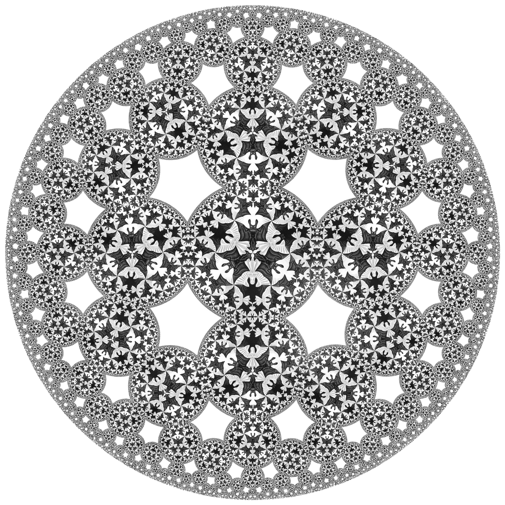

Hyper-tile-ception -- A Hyperbolic tiling of the the Circle Limit IV by Escher
________________________________________
/ Hi, I am Vaibhav Kumar. I am currently \
| learning as a master's student in the |
| University of California, Los Angeles |
| CS Department. Previously I worked as |
| an associate data scientist in the |
| healthcare industry at Optum, |
| UnitedHealth Group. Also, I am not a |
\ penguin; much worse, I am a human. /
----------------------------------------
\
\
.--.
|o_o |
|:_/ |
// \ \
(| | )
/'\_ _/`\
\___)=(___/
I prefer email: <first_name>k@cs[dot]ucla[dot]edu
Linkedin | GitHub | Kaggle | Medium | Twitter
Nurse is Closer to Woman than Surgeon? Mitigating Gender-Biased Proximities in Word Embedding Vaibhav Kumar, Tenzin Singhay Bhotia, Vaibhav Kumar, Tanmoy Chakraborty - Published in Transactions of the Association for Computational Linguistics (TACL), Volume 8, 2020 p.486-503.
Fair Embedding Engine: A Library for Analyzing and Mitigating Gender Bias in Word Embeddings Vaibhav Kumar, Tenzin Singhay Bhotia, Vaibhav Kumar - Accepted at 2nd Workshop for Natural Language Processing Open Source Software at Empirical Methods in Natural Language Processing (NLP-OSS, EMNLP), 2020.
Multiple Resource Management and Burst Time Prediction using Deep Reinforcement Learning Vaibhav Kumar, Siddhant Bhambri, Prashant Giridhar Shambhakar - International Journal of Advanced Computer Science and Applications (IJACSA), January, 2019.
Please refer this.
I recently got a life and started reading non-academic books, following are some of them:
Look again at that dot. That's here. That's home. That's us. On it everyone you love, everyone you know, everyone you ever heard of, every human being who ever was, lived out their lives. The aggregate of our joy and suffering, thousands of confident religions, ideologies, and economic doctrines, every hunter and forager, every hero and coward, every creator and destroyer of civilization, every king and peasant, every young couple in love, every mother and father, hopeful child, inventor and explorer, every teacher of morals, every corrupt politician, every "superstar," every "supreme leader," every saint and sinner in the history of our species lived there--on a mote of dust suspended in a sunbeam.
The Earth is a very small stage in a vast cosmic arena. Think of the rivers of blood spilled by all those generals and emperors so that, in glory and triumph, they could become the momentary masters of a fraction of a dot. Think of the endless cruelties visited by the inhabitants of one corner of this pixel on the scarcely distinguishable inhabitants of some other corner, how frequent their misunderstandings, how eager they are to kill one another, how fervent their hatreds.
Our posturings, our imagined self-importance, the delusion that we have some privileged position in the Universe, are challenged by this point of pale light. Our planet is a lonely speck in the great enveloping cosmic dark. In our obscurity, in all this vastness, there is no hint that help will come from elsewhere to save us from ourselves.
The Earth is the only world known so far to harbor life. There is nowhere else, at least in the near future, to which our species could migrate. Visit, yes. Settle, not yet. Like it or not, for the moment the Earth is where we make our stand.
It has been said that astronomy is a humbling and character-building experience. There is perhaps no better demonstration of the folly of human conceits than this distant image of our tiny world. To me, it underscores our responsibility to deal more kindly with one another, and to preserve and cherish the pale blue dot, the only home we've ever known.
-- Carl Sagan, Pale Blue Dot, 1994
This website was written in markdown format and converted to HTML using markdowntohtml (with minor changes).